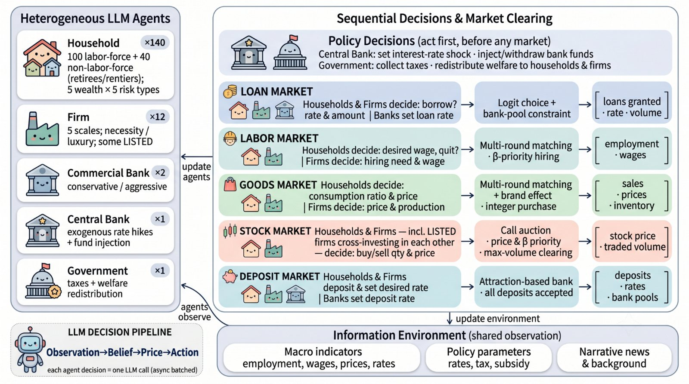
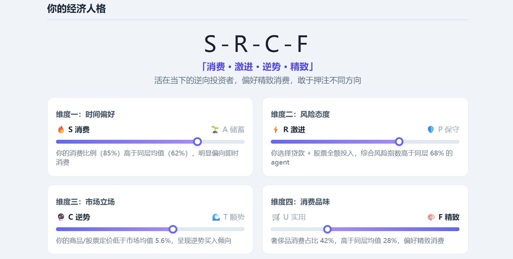
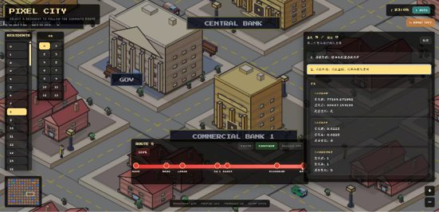

Market and Social System Simulations
Multi-agent modeling and computational simulation for markets, institutions, and social interaction.
市场与社会系统仿真：模拟市场、机构与社会的复杂交互行为。

Center for AI for Social Science
Building social intelligence systems for markets, governance, education, healthcare, and culture.
面向市场、治理、教育、医疗与文化的社会科学智能研究中心。
About 关于
AI4S2 addresses a core gap in current AI research: technical optimization often moves faster than social context. The center advances a multidimensional social-intelligence framework that integrates value alignment, social embedding, and cultural adaptation.
社会科学智能中心面向“重技术优化、轻社会语境”的理论与实践鸿沟，推动人工智能研究从感知智能走向社会智能， 构建“价值规范、社会嵌入、文化适应”相互支撑的新范式。
Normative ethics and AI moral decision-making frameworks for responsible social systems.
基于规范伦理学的价值引导机制，支撑 AI 道德决策与风险治理。
Computational social science, digital governance simulation, multi-scale modeling, and social sensing.
整合复杂系统理论，研究数字治理仿真、多尺度建模与社会感知。
Cultural semantic representation, adaptation mechanisms, and diffusion modeling for global engagement.
融合文化人类学，研究文化语义表征、适应机制与传播建模。
Research Directions 研究方向
Multi-agent modeling and computational simulation for markets, institutions, and social interaction.
市场与社会系统仿真：模拟市场、机构与社会的复杂交互行为。
Long-term consistency between AI goals, human values, social norms, and risk management.
广义 AI 对齐与安全：使 AI 行为与人类价值和社会规范保持一致。
Cross-disciplinary, multimodal social science databases and intelligent data acquisition ecosystems.
社科数据蜂巢：构建跨学科、多模态社会科学数据库与采集生态。
Generative models that search policy and strategy spaces toward social and economic objectives.
生成式目标优化：在大规模策略空间中实现目标导向的有效优化。
Human-AI interaction mechanisms, agent societies, and their behavioral and institutional impact.
人机 Agent 社会科学：研究智能体社会、人机互动机制与影响。
AI for research paradigms, teaching modes, public services, and inclusive social applications.
智能赋能教研及社会服务：革新教学、研究与公共服务模式。
Platform 平台
AI4S2 builds simulation platforms that combine large language models, heterogeneous agents, counterfactual reasoning, operations research, and visual analytics. The goal is a controllable, reproducible, and explainable social sandbox for policy, market, education, and public-service decisions.
中心构建融合大语言模型、异质智能体、反事实推理、运筹优化与可视分析的社会模拟平台， 形成可建模、可推演、可对齐、可干预的智能社会数字沙盘。

Priority Projects 聚焦项目

A foundation platform for representative economic-world simulation, with households, firms, banks, government, central-bank actions, and market environments.

High-fidelity multi-agent environments for policy shocks, market mechanisms, risk transmission, and institutional strategy testing.

Digital twins for hospital operations, patient flow, service allocation, triage optimization, and regional healthcare planning.

Learning agents, AI teachers, digital classrooms, and education-policy sandboxes for intelligent teaching, learning, assessment, and school governance.
Outputs 成果
Early prototypes already cover economic agents, environment generation, agent-environment co-evolution, real-time dashboards, and optimization modeling for complex social problems.



Media Library 素材库
The original embedded media from the project-highlight and AI4S2 introduction decks is now available as a site-native visual library for reuse in pages, reports, talks, and public communication.
Research Team 团队
The center brings together dual-appointed faculty, affiliated professors, doctoral students, and collaborators across AI, economics and finance, computational social science, public governance, healthcare, education, and cultural cognition.
中心汇聚人工智能、经济金融、计算社会科学、公共治理、医疗健康、教育与文化认知等方向的交叉团队。
Join Us 加入我们
We welcome students, research assistants, engineers, faculty collaborators, and public-sector partners interested in AI for social science, simulation, governance, markets, education, healthcare, and public-good systems.